Old Players Club (老东西俱乐部，简称 OPC) 是由一群玩 Minecraft 时遇到的玩家组成的一个小型玩家俱乐部。
OPC 在 2020 年末初步成型，于 2021.10.2 正式成立，目前有成员 16 名。初名为 Oldoorxi (ODX), 后改名 OPC.
我们玩《Minecraft》、《Counter-Strike 2》和《Valorant》等游戏。作为一个充满活力和热情的俱乐部，我们致力于创造一个友好、和谐、有趣的环境。
在《Minecraft》中，我们体验各种各样的小游戏，展现成员的独特才华。OPC 旗下还有一个造图组 Milkmappers.
在《Counter-Strike 2》和《Valorant》这样的竞技游戏中，我们追求团队合作和竞技精神，共同挑战更高的游戏水平。

[1080P 裁剪 / 8K 裁剪] 右手 拍摄 1226*920 2024.2.10 Soartex Fanver 材质包

第 3 排: 尘墨 XTS 天弓 默默
第 2 排: 右手 果冻
第 1 排: 芒果 龙王 本子 剑鱼
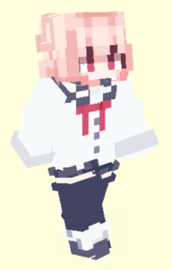
XTS
Milkmappers
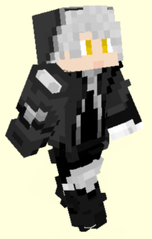
尘墨
Milkmappers
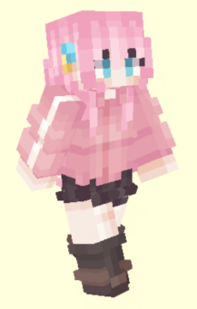
默默
Milkmappers我是土匪浮空推特，是个初升
在别人眼里我是魅魔的儿子，是男娘的老公，是各位的狗
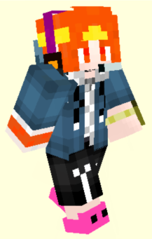
天弓
Milkmappers第一届未举办的 ODX FPS 大赛抽象马枪冠军；捂胃契约皮肤锐评大亡，剪寄糕手，door 雪生，破防红温专家
群内最优秀也是唯一的 mc 材质包制作者，全国英语创新大赛省级一等奖获得者。自封本群牛子最长。无套 M4A1 爱好者。别称 skybyd，天弓你个 byd
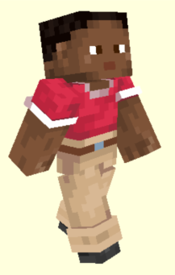
AMY
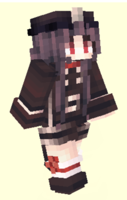
本子
FPS 砖家，MC 转瓦的典型，拥有 CS 历史段位双 AK，瓦历史段位黄金一的职业"水"平
目前处于坐牢阶段中
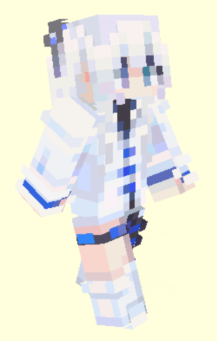
CY
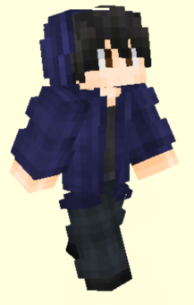
果冻
道馆转嫁，拥有十八厘米棘把
目前正在道馆
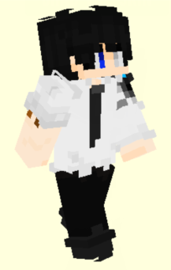
剑鱼
Milkmappers
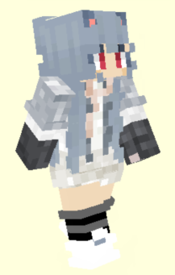
龙王
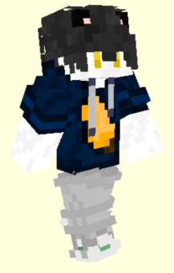
芒果
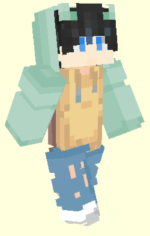
右手
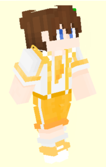
大蛋糕
潜水
落夏
潜水
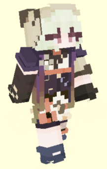
牛排
Milkmappers 潜水
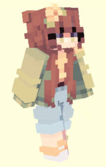
小朱
潜水
* 默默, 天弓, 本子, 果冻 的个人介绍为本人提供。
** 由于时间原因，AMY, 大蛋糕, 果冻, 落夏, 右手 暂无个人页面。
*** 皮肤渲染图来自 Minecraft Tools. AMY, 落夏 无可用皮肤。